Hier lernst du die Grundlagen von Scratch: Oberfläche, Bewegung, Malstift, Tastatursteuerung und Kostüme.
In diesem Kurs lernst du Schritt für Schritt, wie Scratch aufgebaut ist und wie aus einzelnen Blöcken ein Programm wird. Du bewegst Figuren, lässt sie zeichnen, steuerst sie mit Tasten und arbeitest mit verschiedenen Kostümen. Am Ende kannst du kleine Programme nicht nur bauen, sondern auch erklären.
Lies die Texte in Ruhe und setze die Schritte direkt in Scratch um. Wenn du festhängst, schau auf die passende Hilfekarte unten in der Navigation. Dort findest du Bilder und kurze Erklärungen. Schließe die Seite nicht und lade sie nicht neu, damit deine Antworten erhalten bleiben. Wechsle zwischen Scratch und dieser Seite über die Symbole in der Menüleiste.
Zum Schluss gebe deinen Namen links unten ein und klicke auf summary & submit. Deine Daten werden an deine Lehrerin übertragen und eine txt Datei auf deinen Computer heruntergeladen. Diese Datei kannst du auch in OneNote einfügen.
Du lernst die Scratch-Oberfläche kennen und verstehst, welcher Bereich wofür da ist.
Die Scratch-Oberfläche hat vier wichtige Bereiche. Auf der Bühne siehst du, was dein Programm macht. Im Programmierbereich setzt du die Blöcke zusammen. In der Figurenliste verwaltest du Figuren und Bühnenbilder. In der Blockpalette findest du alle Blöcke, die du zum Programmieren brauchst.
Schau dir das Bild genau an und versuche, jeden Bereich im echten Scratch-Fenster wiederzufinden.
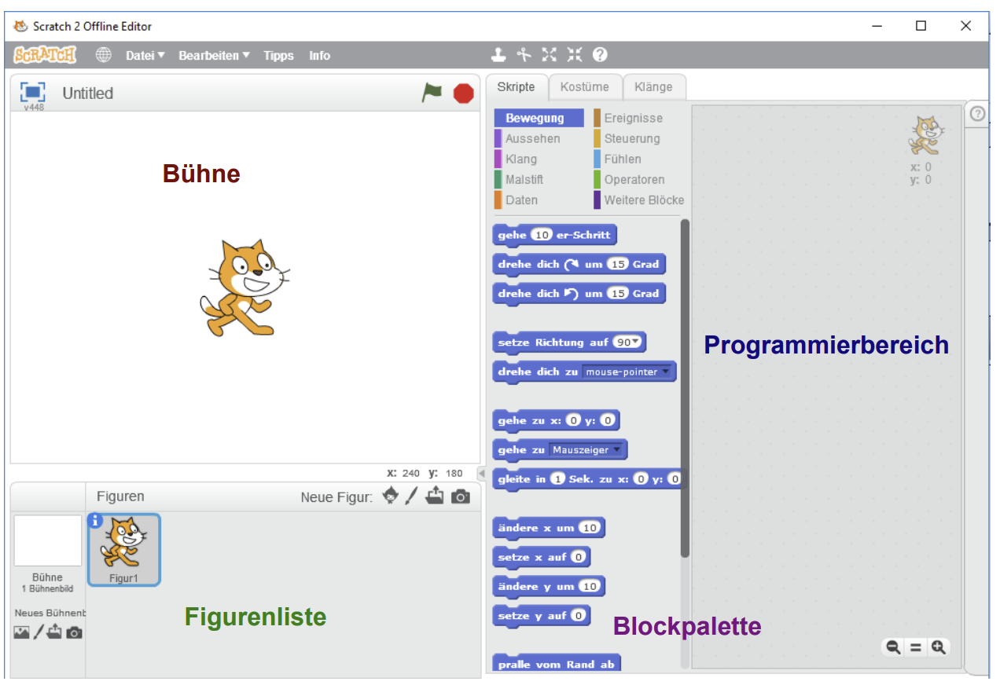
Teste nun dein Wissen: Ziehe die Begriffe zu den passenden Erklärungen.
Jetzt machst du die ersten drei wichtigen Dinge in Scratch: Sprache einstellen, Projekt speichern und die Katze umbenennen.
Starte Scratch auf dem Computer oder im Browser über scratch.mit.edu. Klicke dort auf Erstellen, damit ein neues Projekt geöffnet wird. Danach wechselst du immer wieder zwischen Scratch und dieser Lernseite. So arbeitest du Schritt für Schritt und kannst direkt ausprobieren, was beschrieben wird.
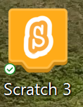
Öffne jetzt Scratch und vergleiche das Programmfenster mit dem Bild oben. Die Anordnung kann etwas anders aussehen, aber die Bereiche haben dieselbe Aufgabe.
Führe jetzt diese Schritte direkt in Scratch aus. Wenn du beim Speichern oder Umbenennen nicht weiterkommst, nutze Hilfekarte A.
Hast du alles geschafft? Super! Dann beantworte die Fragen unten.
Teste nun dein Wissen mit diesen Fragen:
Du probierst Bewegungsblöcke aus und verstehst den Unterschied zwischen Anweisung und Sequenz.
In den nächsten Aufgaben testest du einzelne Bewegungsblöcke. Du kannst sie anklicken oder in den Programmierbereich ziehen. So beobachtest du direkt, was jeder Block mit der Figur macht.
Eine Anweisung ist ein einzelner Befehl, zum Beispiel gehe 10 Schritte. Mehrere Anweisungen in einer sinnvollen Reihenfolge heißen Sequenz. Beim Programmieren ist die Reihenfolge wichtig, weil Scratch die Blöcke von oben nach unten ausführt.
Teste jetzt jeden Block einzeln. Achte besonders darauf, was bei positiven und negativen Zahlen passiert und wie sich die Katze auf der Bühne bewegt.
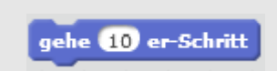
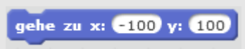
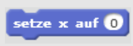
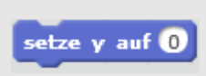
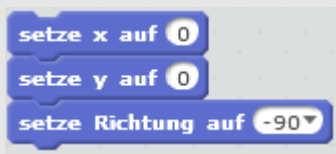
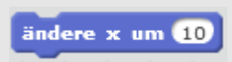
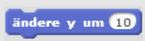
Baue jetzt eine kleine Bewegungs-Sequenz. Schreibe erst die Reihenfolge der Befehle auf und setze sie dann in Scratch um.
Du lässt die Katze mit dem Malstift zeichnen und nutzt dabei ein sauberes Start-Skript.
Bevor du weitermachst, speichere dein Projekt als 02katze_bewegen. Danach aktivierst du die Erweiterung Malstift. So kann die Katze beim Laufen Spuren auf der Bühne hinterlassen.
Dafür klickst du links unten auf den blauen Button mit dem Plus. Danach wählst du die Erweiterung Malstift aus. Jetzt erscheinen neue Blöcke, mit denen du Spuren einschalten, ausschalten und löschen kannst.
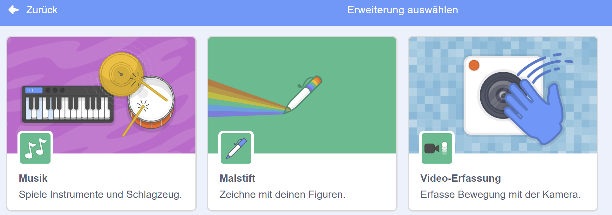
Jetzt zeichnest du mit der Katze einfache Formen. Nutze dafür immer den Block wenn Fahne angeklickt, damit dein Programm sauber startet.
Ein sinnvolles Start-Skript sieht so aus: zuerst Spuren wegwischen, dann den Stift einschalten, danach die Bewegungsblöcke ausführen und am Ende den Stift wieder ausschalten. So erkennst du jede neue Zeichnung klar.
Verkleinere die Katze etwas, damit du die Linien besser sehen kannst. Wenn du Hilfe beim Aufbau des Skripts brauchst, öffne Hilfekarte B.
Schreibe für jede Aufgabe ein eigenes kleines Programm. Speichere sauber unter neuen Namen, damit du deine Lösungen später wiederfindest.
Tipp: Speichere jedes Programm unter einem neuen Namen. Wenn du beim Zeichnen nicht weiterkommst, nutze Hilfekarte B.
Du steuerst die Katze mit den Pfeiltasten und baust dafür mehrere Ereignisblöcke.
Öffne dein Projekt 01katze oder starte ein neues und speichere es unter 03katze. Verkleinere die Katze etwas, damit du die Bewegungen auf der Bühne besser beobachten kannst.
Unser Ziel ist: Bei jedem Tastendruck soll die Katze einen kleinen Schritt in die passende Richtung gehen. Dafür brauchst du für jede Taste ein eigenes kleines Skript.
Du kennst bereits das Ereignis wenn Fahne angeklickt. Jetzt kommt ein zweites wichtiges Ereignis dazu: wenn Taste ... gedrückt. Ziehe diesen Block in den Programmierbereich, wähle zum Beispiel die rechte Pfeiltaste und ergänze darunter den passenden Bewegungsblock.
Wenn du das Prinzip verstanden hast, kannst du die restlichen Pfeiltasten fast genauso bauen. Wenn du bei der Tastenauswahl Hilfe brauchst, öffne Hilfekarte C.
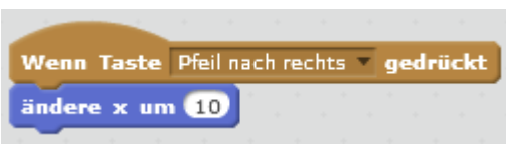
1. Programmiere wenn Fahne angeklickt so, dass die Katze zu einer festen Startposition unten in der Bühnenmitte gesetzt wird.
2. Programmiere dann die restlichen Pfeiltasten. Probiere danach aus, ob die Katze wirklich in alle vier Richtungen laufen kann.
Du musst nicht jedes Tasten-Skript komplett neu bauen. Du kannst ein fertiges Skript duplizieren und danach nur Taste und Bewegungsrichtung ändern.
Mit Rechtsklick auf einen Block kannst du Duplizieren oder Löschen auswählen.
Du sorgst dafür, dass die Katze beim Laufen in die richtige Richtung schaut.
Im Moment läuft die Katze zwar nach links und rechts, schaut aber immer in dieselbe Richtung. Das wirkt unnatürlich. Deshalb braucht sie ein zweites Kostüm für die Bewegung nach links.
Klicke dazu mit der rechten Maustaste auf Kostüm 1 und wähle Duplizieren.
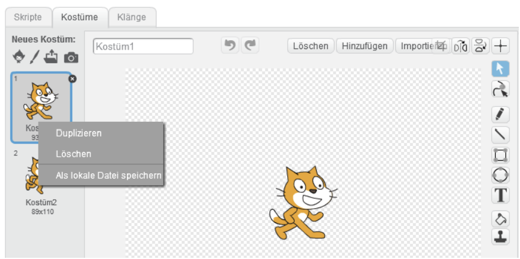
Im Kostümfenster siehst du jetzt zwei Kostüme. Spiegele eines davon mit Links und Rechts vertauschen. Danach gib beiden Kostümen klare Namen, zum Beispiel katze_rechts und katze_links.
Wechsle danach zurück in den Programmierbereich. Die Blöcke für den Kostümwechsel findest du im Bereich Aussehen. Dort legst du fest, welches Kostüm vor welcher Bewegung gezeigt werden soll.
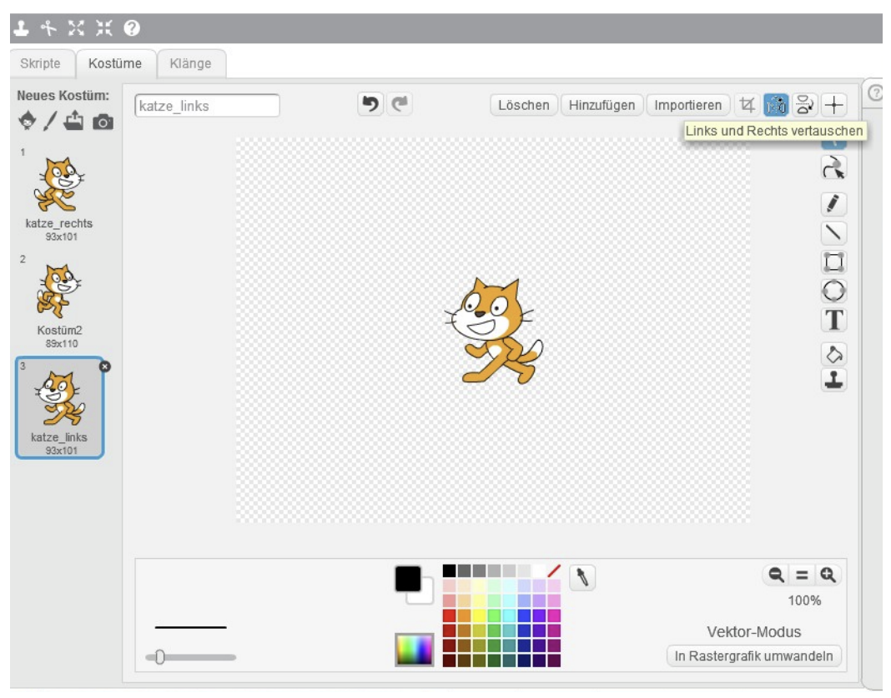
Ordne hier zusammen, welcher Schritt im Kostümfenster welche Wirkung hat.
Ergänze deine Tastatur-Skripte so, dass vor jeder Bewegung zuerst das passende Kostüm gewählt wird. Teste danach, ob die Katze bei rechts nach rechts schaut und bei links nach links. Wenn du bei der Tastatursteuerung hängen bleibst, nutze Hilfekarte C.
Hier vertiefst du dein Wissen über Bewegungen, Wiederholungen und Zeichnen.
Finde heraus, welcher Code zu welcher Zeichnung passt. Wenn du unsicher bist, baue den Code in Scratch nach und beobachte genau, welche Figur entsteht.
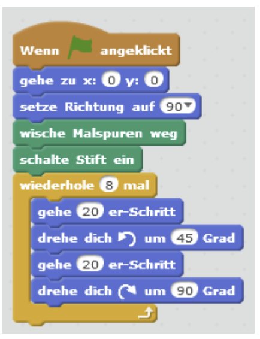
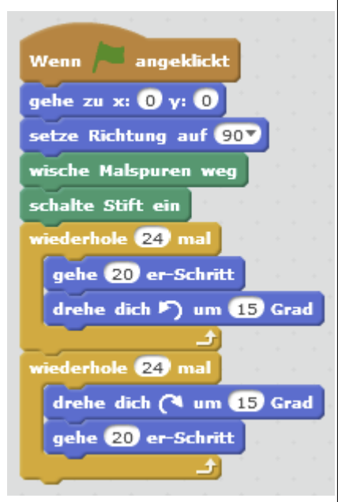
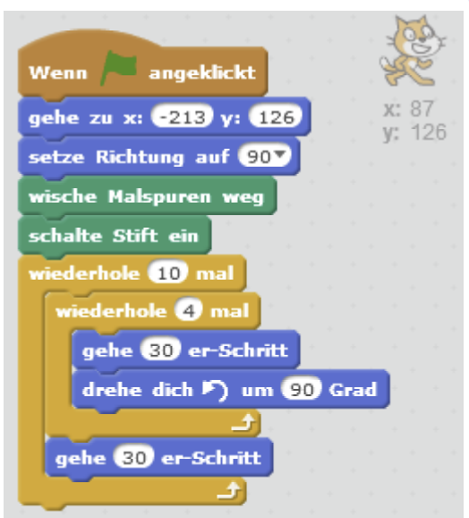
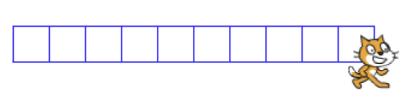
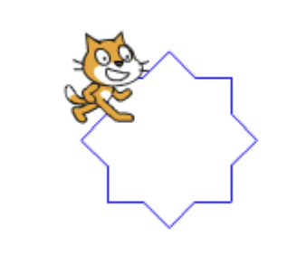
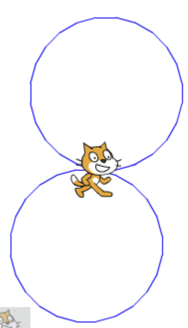
In der oberen Aufgabe gibt es ein Programm, in dem die Katze zehn Quadrate nebeneinander zeichnet. Erweitere dieses Programm so, dass daraus ein Feld aus zehn mal zehn Quadraten entsteht. Überlege dabei: Welche Schleife wiederholt das Quadrat und welche Schleife wiederholt die ganze Reihe?
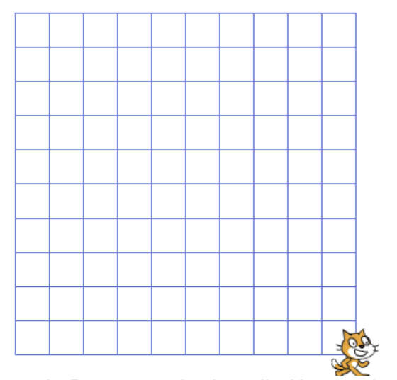
Beschreibe genau, was der folgende Programmcode auslöst. Die Katze wurde hier durch einen Ball ersetzt, damit man das Abprallen am Rand leichter erkennen kann.
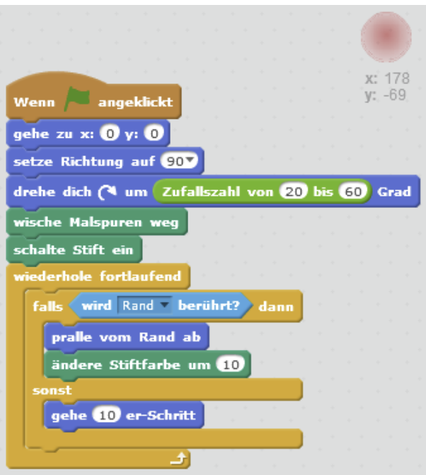
Schreibe ein Programm, das die Katze das „Haus vom Nikolaus“ zeichnet. Erweitere es danach so, dass fünf Häuser direkt nebeneinander entstehen. Überlege dir vorher, welche Bewegungen sich wiederholen.
Diese Hilfekarte hilft dir beim Speichern und Umbenennen deiner ersten Figur.
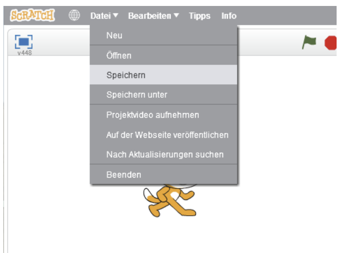
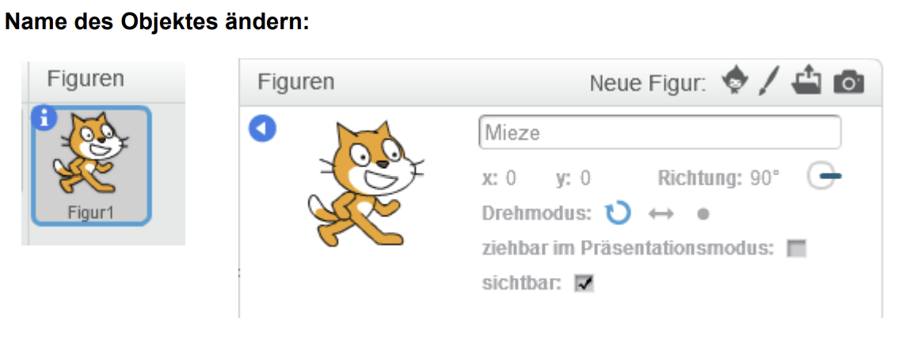
Diese Hilfekarte hilft dir bei Bewegung, Malstift und ersten Zeichnungen.
So könnten die Anfänge deines Programms aussehen:
Diese Hilfekarte hilft dir bei Tastatursteuerung und Richtungswechsel.
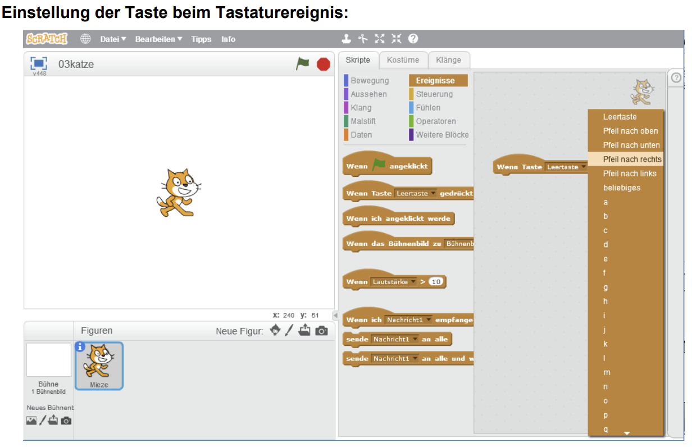
Hier kannst du die Lösungsbilder aufklappen.